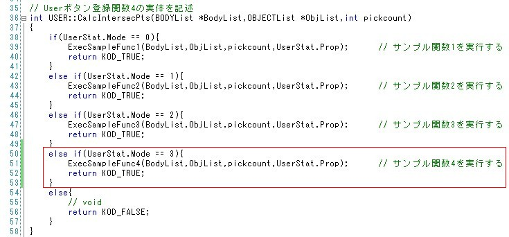
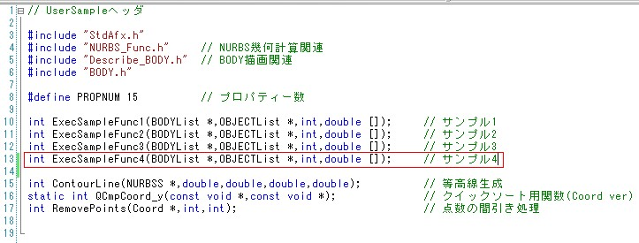
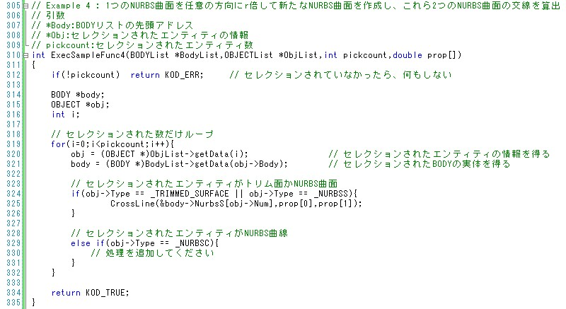
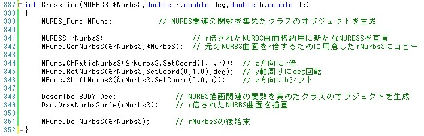
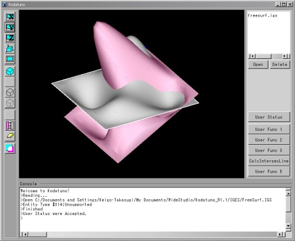
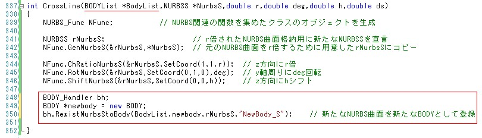
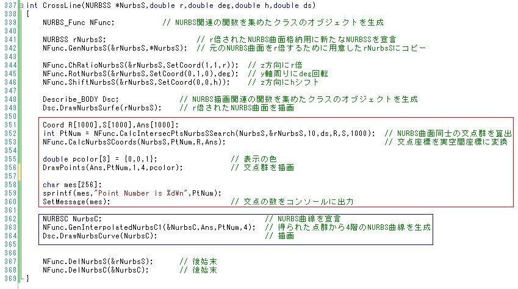
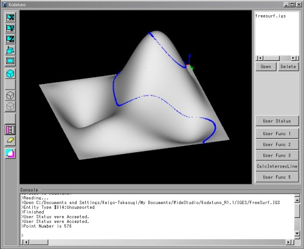
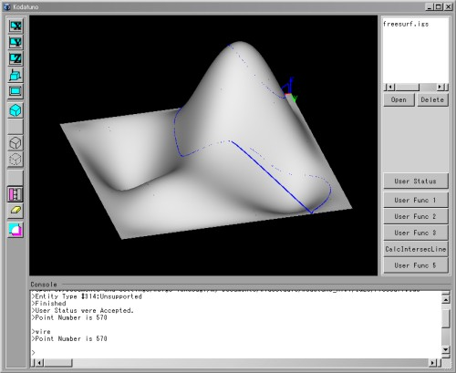

|
|
|
Prev
Index
Next |
簡単なアプリケーションの作成
このセクションでは、サンプルアプリケーションの応用として、1つのNURBS曲面をz方向にr倍し,y軸周りにdeg度回転させ、z方向にhだけシフトさせて 新たなNURBS曲面を作成し、これら2つのNURBS曲面の交線を算出してみます。
以上で、簡単なアプリケーション作成手順の説明を終わります。
- まず、UserFunc.cpp内のCalcIntersecPts()関数を以下のように変更します。
 - 次に、UserFuncSub.hにExecSampleFunc4()をプロトタイプ宣言します。
 - 次に、UserFuncSub.cppにExecSampleFunc4の実体を記述します。これは、ExeSampleFunc1()を丸ごとコピーし、ContourLine()のみ 異なる関数とすればよいでしょう。今回はCrossLine()という関数名にします。引数は、
とします。
- *NurbsS: 読み込んだNURBS曲面へのポインタ
- r: NURBS曲面の倍率(prop[0])
- deg: NURBS曲面の回転量(prop[1])
- h: r倍されたNURBS曲面のシフト量(prop[2])
- ds: 交点群各点間の距離(prop[3])
また同時に、UserFuncSub.hにCrossLine()のプロトタイプ宣言を付加しておいてください。 
- CrossLine()の実体を書いていきます。 まず、NURBS演算関数を用いるため、NURBS_Funcクラスのオブジェクトを生成します。次に、NURBS_FuncのChRatioNurbsS()関数、RotNurbsS()関数、 ShiftNurbsSurfe()関数を用いて、指定したNURBS曲面をz方向にr倍し、y軸周りにdeg度回転させ、z方向にdシフトさせます。 このとき、変更されたNURBS曲面はオリジナルのNURBS曲面とは異なる新たなNURBS曲面として定義しなおす必要があります。これは、NURBS_FuncのGenNurbsS()関数を用います。 ここまでで、実際にr倍されたNURBS曲面が生成されたか、グラフィックに描画して確かめてみましょう。 このとき、NURBS描画関数を使うために、Describe_BODYクラスのオブジェクトを生成しなければなりません。NURBS曲面描画関数はDrawNurbsSurfe()です。
ここまでのプログラムを以下に示します。このプログラムを実行してみましょう。これまでのプログラムの変更を全て保存し、2.2 Kodatunoを動かしてみよう に沿って コンパイル、実行してください。次に、"FreeSurf.IGS"を読み込み、選択状態にします。"User Stat"を開き、Modeを4にセット、Prop1〜3までに適当な値を入れ、 "CalcIntersecLine"ボタンを押します。下図は、Prop1=2, Prop2=30, Prop3=10とした場合の結果です。  ここで、新たに作成したNURBS曲面は、新たなBodyとして登録されているわけではないことに注意してください。新たに登録する場合は、 BODY_HandlerクラスのRegistNurbsStoBody()関数を用います。このとき、この関数の引数として、登録するBODYListへのポインタと新たなBODYが必要になります。   - ここでは、新たなBodyとして登録しないで進めます。
次に、NURBS曲面同士の交点群を算出するために、NFunc.CalcIntersecPtsNurbsSSearch()関数を用います。さらに、これによって得られた交点群から、NURBS曲線を生成 してみます。赤枠部を付加することにより、交点群が算出され、描画されます。また、青枠部を付加すれば、得られた交点群からNURBS曲線を生成します。   ［交点群］交線の表示が部分的におかしいのは、交点配列がきれいにソートされていないからです。CalcIntersecPtsNurbsSSearch()関数などを用いて交点群を生成する場合は、 かならずしも、順序正しく点が格納されていないため、何らかのソート用コードを記述しなければなりません。  ［交線］
| Copyright(C) Kodatuno Development Team, 2011 | Last modified: Mar. 3, 2011 |